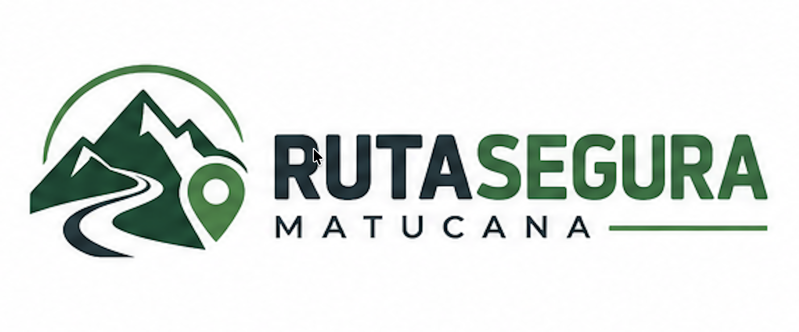
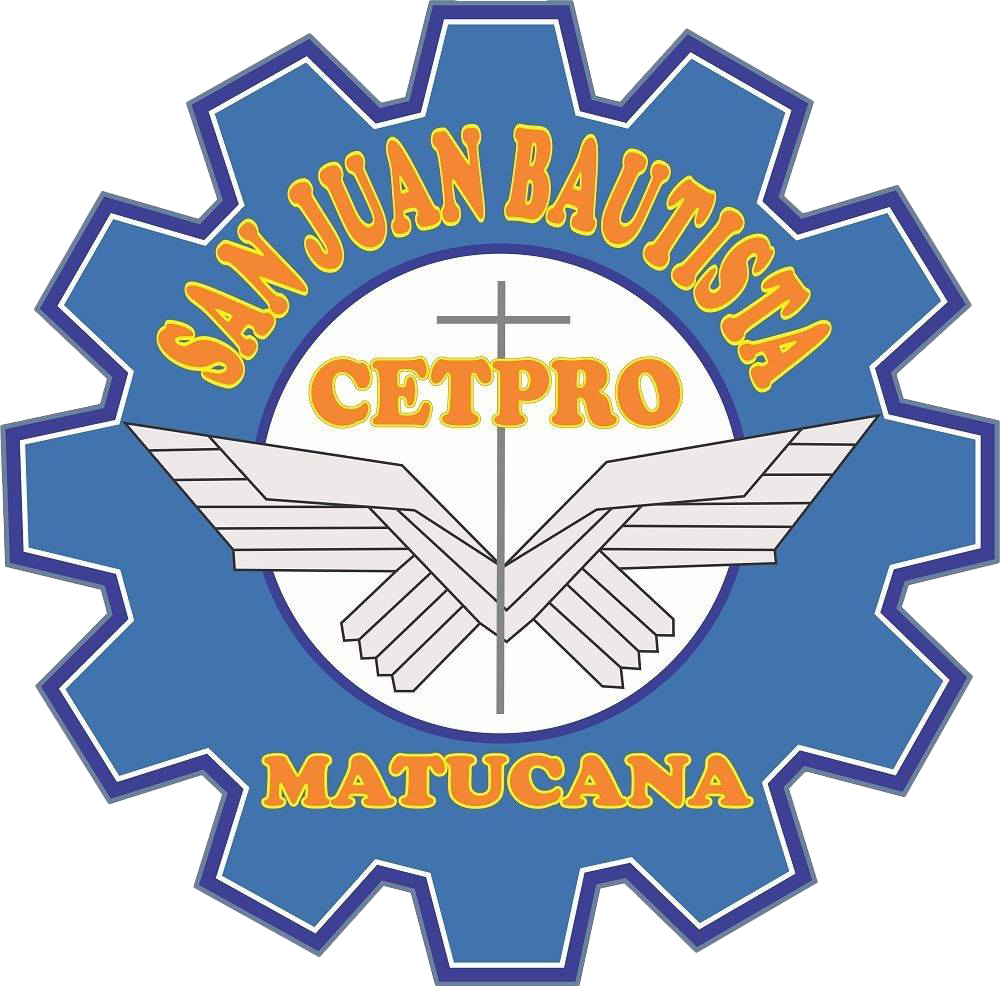
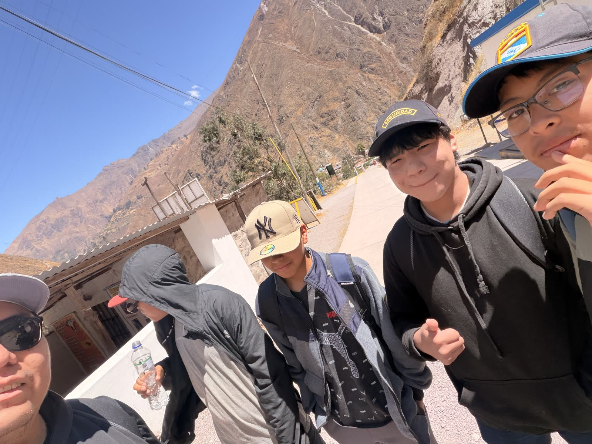
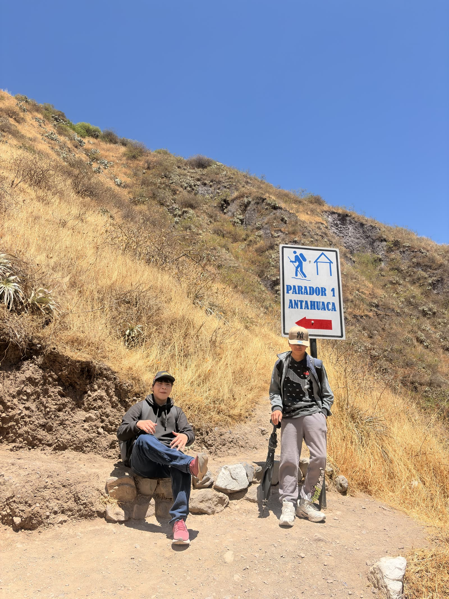
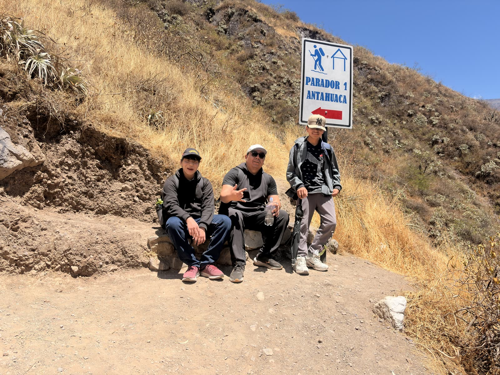
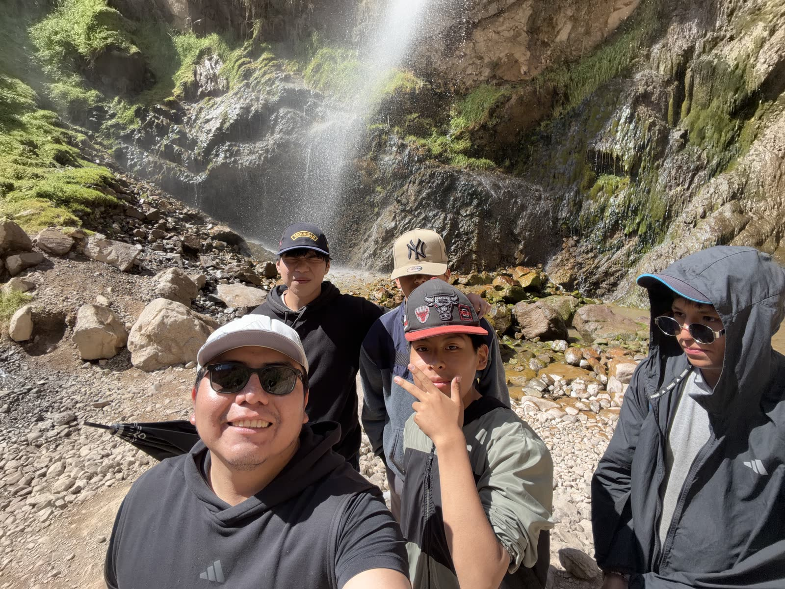
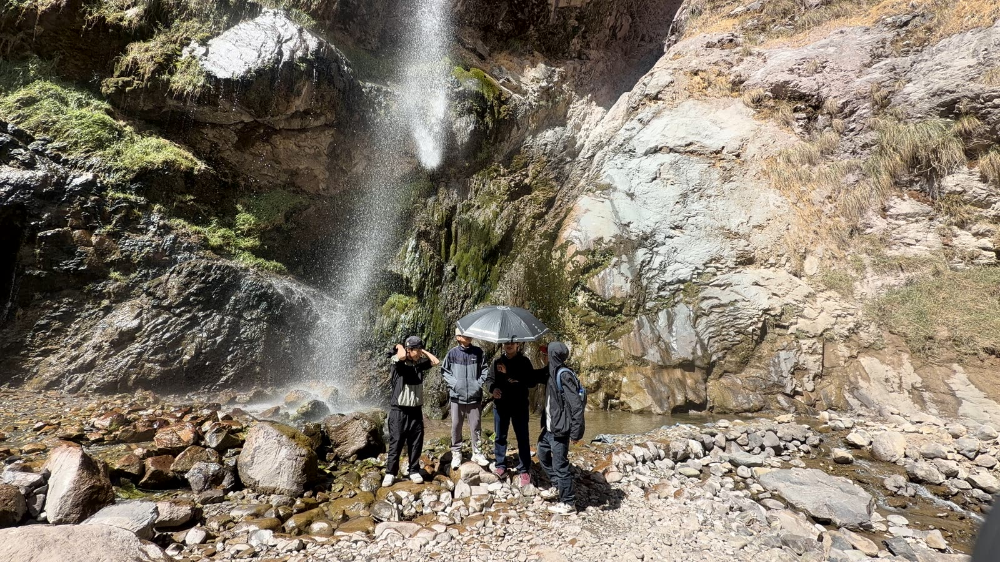
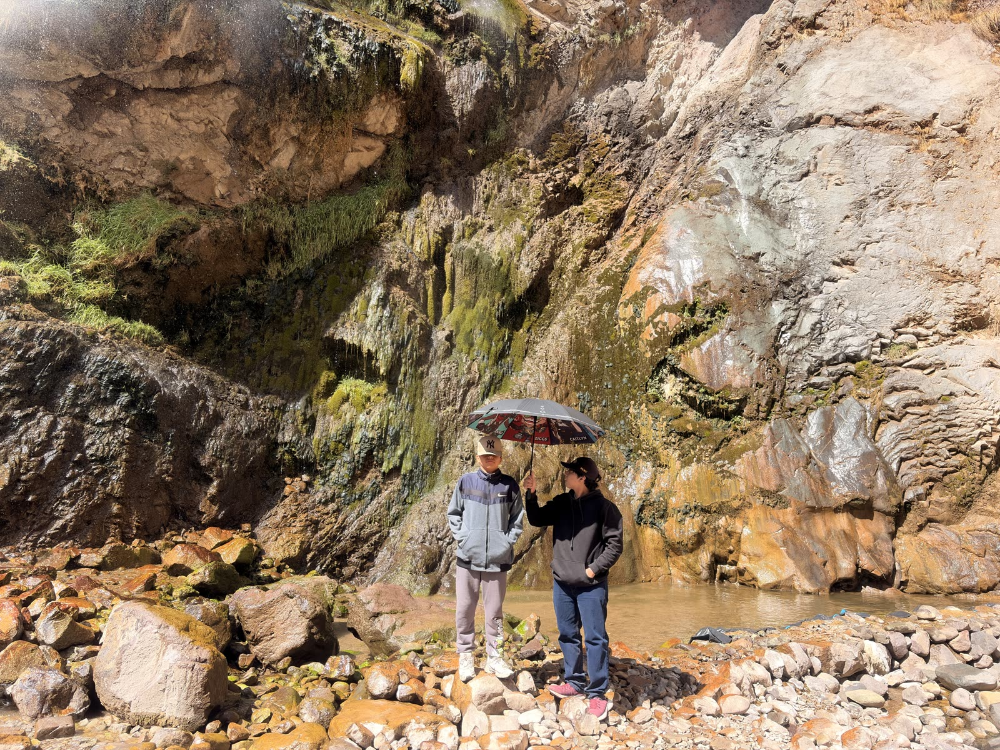
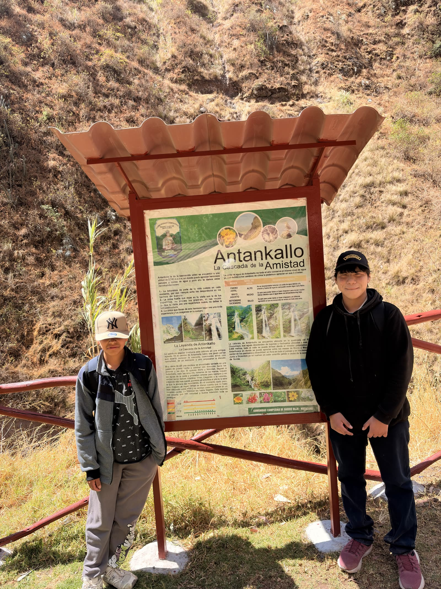

Explora con confianza
Prepárate para recorrer uno de los principales atractivos naturales de Matucana de forma informada y segura.

Consulta información útil antes y durante tu visita a la Catarata de Antankallo.
Conoce el recorrido, distancia y puntos importantes.
Recomendaciones y puntos de precaución.
Consulta las condiciones antes de iniciar.
Encuentra establecimientos y servicios cercanos.
Accede a navegación GPS y mapas offline.
Consulta la información principal del recorrido antes de iniciar tu visita y conoce los elementos de seguridad integrados en RutaSegura.
Hitos turísticos Puntos importantes identificados durante el recorrido.
Puntos de precaución Sectores donde el visitante debe desplazarse con mayor cuidado.
Ubicación y navegación RutaSegura utiliza la ubicación del visitante para apoyar el recorrido.
Consulta la ruta, ubicación, puntos turísticos y zonas de precaución desde la aplicación.
RutaSegura identifica zonas que requieren mayor atención durante el recorrido y brinda herramientas de apoyo ante una emergencia.
Las zonas de mayor cuidado son identificadas para que el visitante pueda reconocerlas durante su recorrido.
Utiliza calzado adecuado, mantente en el sendero y presta atención a sectores estrechos o de terreno irregular.
La aplicación utiliza la ubicación del visitante para apoyar su orientación durante el recorrido.
La aplicación incorpora una función SOS para apoyar al visitante ante una situación de emergencia durante la ruta.
RutaSegura permite consultar las condiciones meteorológicas antes de iniciar el recorrido hacia Antankallo y ayuda a evaluar si es un momento adecuado para realizar la ruta.
Las condiciones permiten realizar el recorrido con normalidad.
El clima o el horario requieren mayor atención antes de comenzar el recorrido.
Las condiciones meteorológicas o el horario pueden hacer que iniciar la ruta no sea recomendable.
La aplicación analiza información meteorológica y el horario para mostrar una recomendación al visitante.
RutaSegura conecta al visitante con establecimientos y servicios locales que pueden ser útiles antes o durante su visita a Antankallo.
📍 Cerca del punto de inicio de la ruta
Antes de iniciar tu recorrido, verifica que lleves agua, protección solar y lo necesario para realizar la ruta.
RutaSegura busca dar visibilidad a emprendimientos y servicios locales, conectando a los visitantes con la economía de la comunidad.
Conocimos y recorrimos la ruta hacia Antankallo para registrar información real del trayecto y desarrollar una solución pensada desde la experiencia del visitante.







Nuestro equipo recorrió la ruta hacia la Catarata de Antankallo para conocer el entorno, registrar el recorrido y analizar cómo RutaSegura puede contribuir a una experiencia turística más segura.
Reyner · Equipo RutaSegura
Terry · Equipo RutaSegura
Reyner · Equipo RutaSegura
Ángel · Equipo RutaSegura
Ángel · Equipo RutaSegura
Equipo RutaSegura